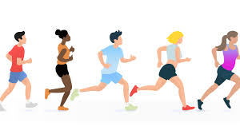

Gaming
When time allows I love to play games. Whether on my X-box One or on my laptop.
Football games, driving games and FPS games are my favourites - I've put more hours into Football Manager and Battlefield than I thought would be humanly possible.
One day it would be nice to have a fancy gaming PC but they are a little expensive.
Fancy Dress
Every year on New Years Eve my family and I have a fancy dress party. Although the idea isnt always welcome, everyone always gets into it and pulls out all the stops to be crowned the best dressed.
Here are a few of the things I've been dressed as:
P.S If you click on each of the above you can see how the dodgy the costumes looked on the night!
Running
When my knees and ankles arent playing up I love to run! It's a great way of keeping fit and beating stress.
Every February our local 10k race - the Dewsbury 10k - takes place which some friends and I like to enter as it forces you to train over Christmas when the lure of chocolate and alcohol can take over.
I've run this race several times now - each time around the 50 minutes mark and even helped raise money for charity.
